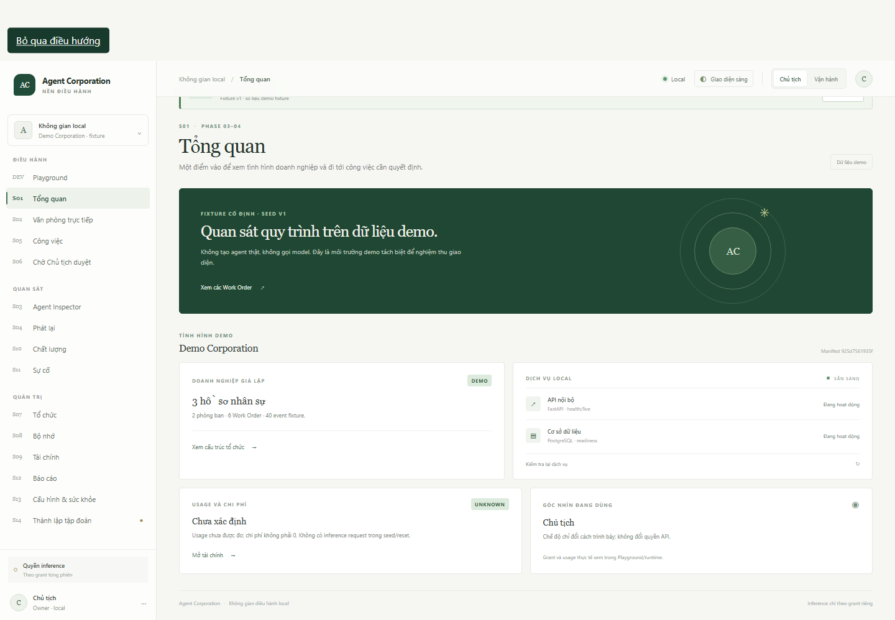
overview · 1440×900
Heading: Tổng quan · overflow: False
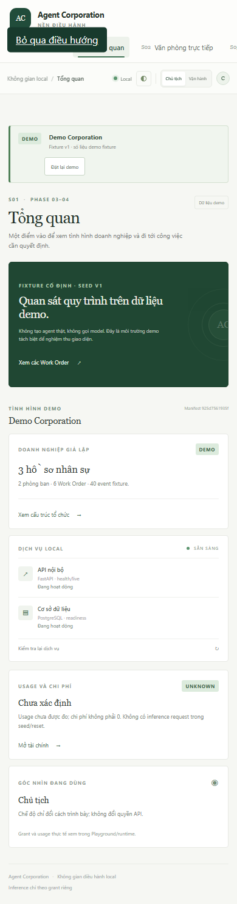
overview · 390×844
Heading: Tổng quan · overflow: False
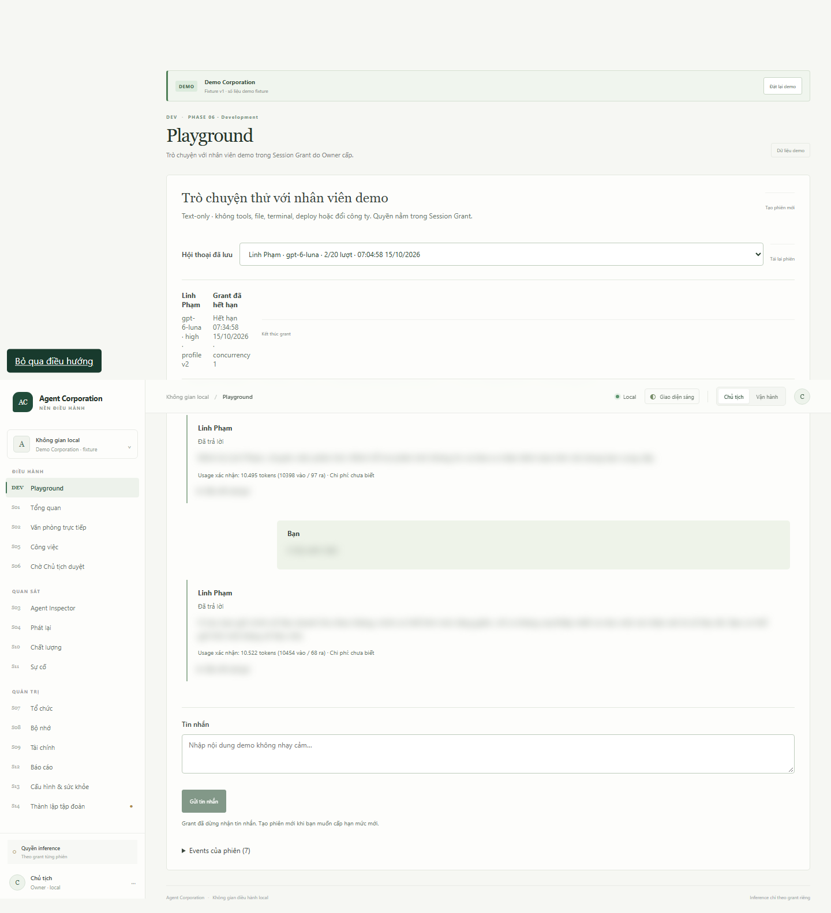
playground · 1440×900
Heading: Playground · overflow: False
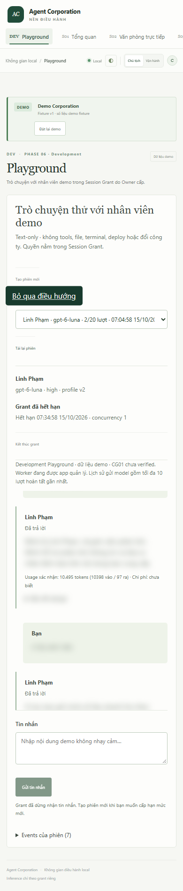
playground · 390×844
Heading: Playground · overflow: False
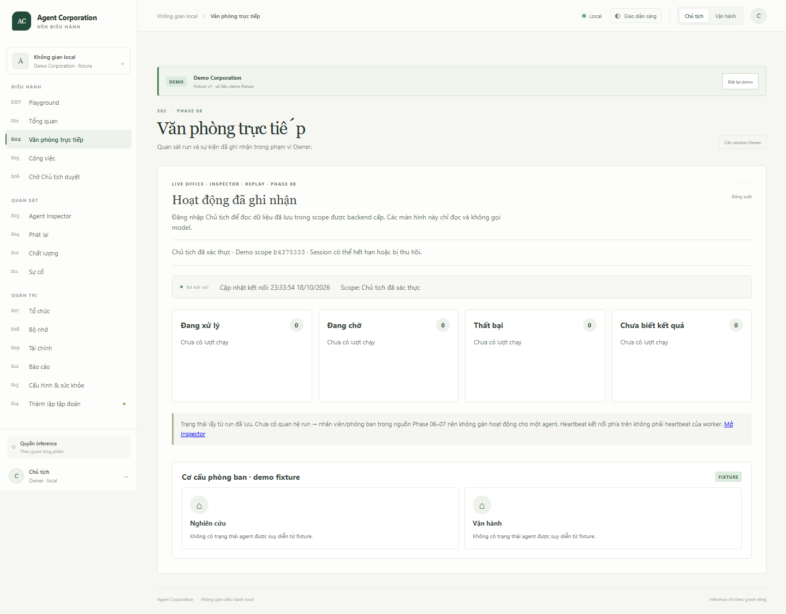
office · 1440×900
Heading: Văn phòng trực tiếp · overflow: False
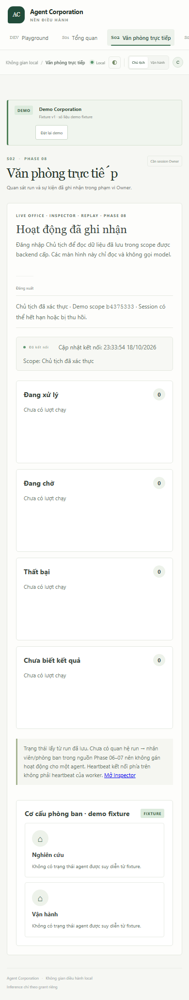
office · 390×844
Heading: Văn phòng trực tiếp · overflow: False
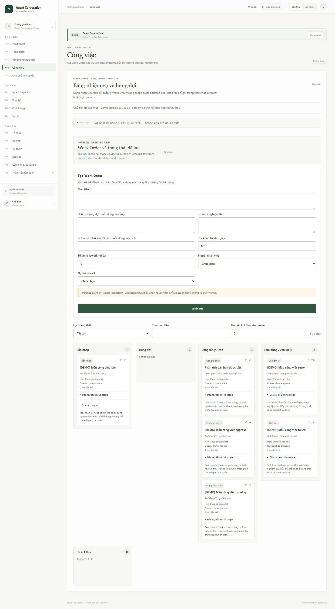
work · 1440×900
Heading: Công việc · overflow: False
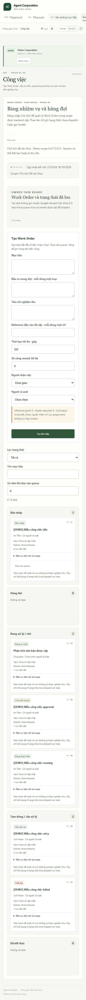
work · 390×844
Heading: Công việc · overflow: False
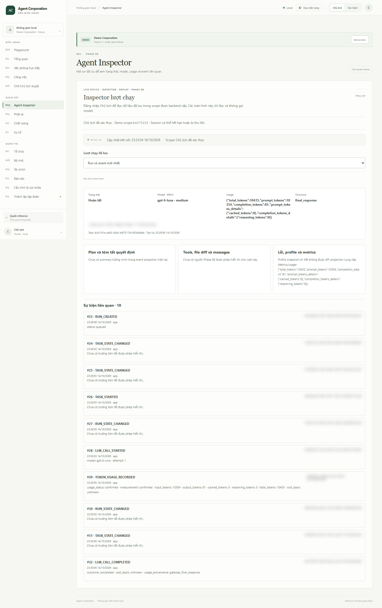
inspector · 1440×900
Heading: Agent Inspector · overflow: False
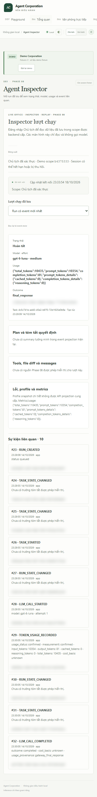
inspector · 390×844
Heading: Agent Inspector · overflow: False
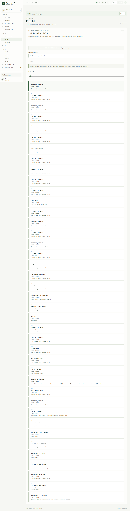
replay · 1440×900
Heading: Phát lại · overflow: False
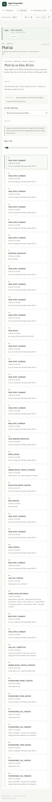
replay · 390×844
Heading: Phát lại · overflow: False
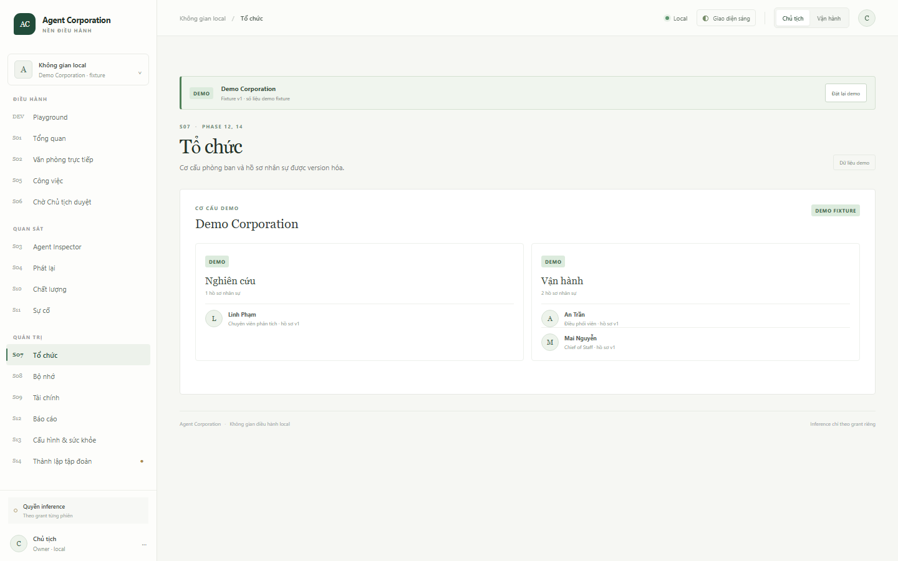
organization · 1440×900
Heading: Tổ chức · overflow: False
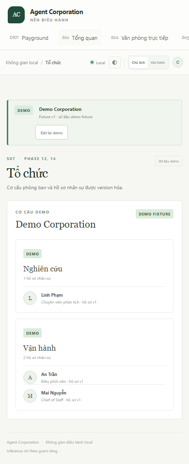
organization · 390×844
Heading: Tổ chức · overflow: False
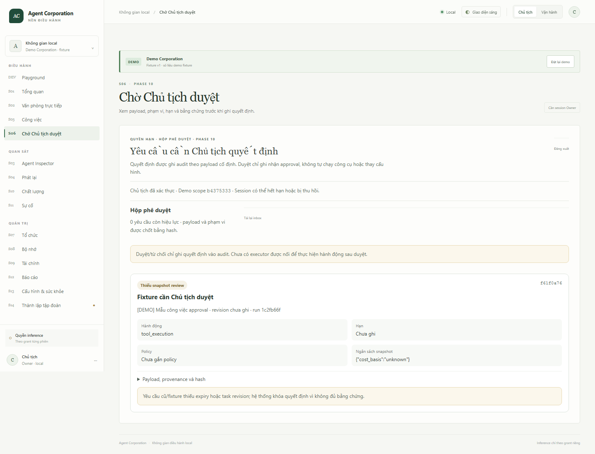
approvals · 1440×900
Heading: Chờ Chủ tịch duyệt · overflow: False
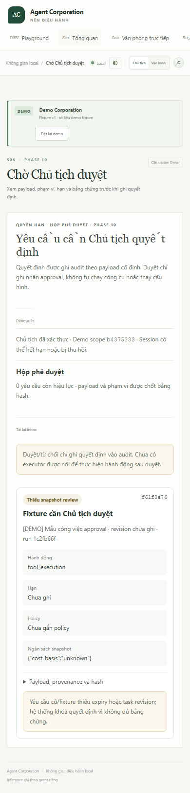
approvals · 390×844
Heading: Chờ Chủ tịch duyệt · overflow: False
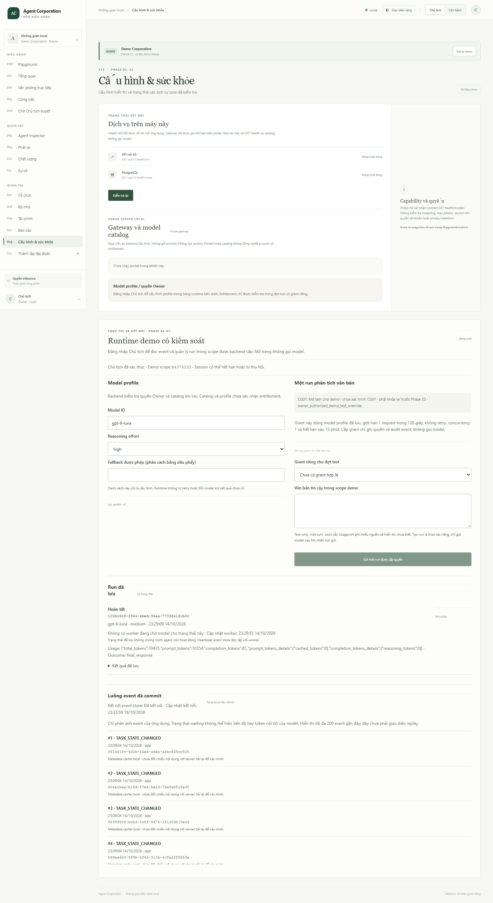
settings · 1440×900
Heading: Cấu hình & sức khỏe · overflow: False
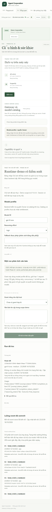
settings · 390×844
Heading: Cấu hình & sức khỏe · overflow: False
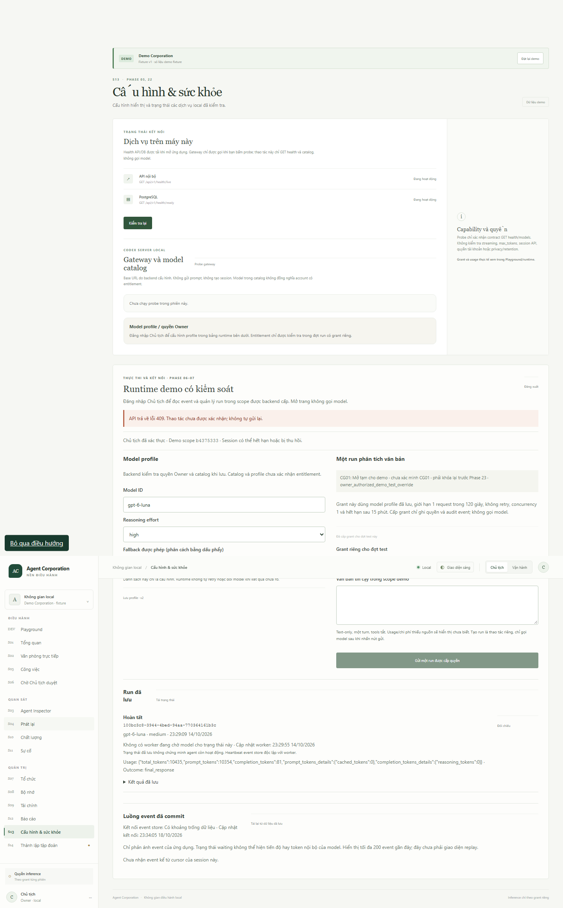
states/cursor-gap · 1440×900
Heading: Cấu hình & sức khỏe · overflow: False
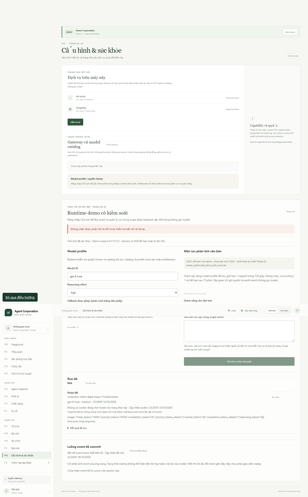
states/offline · 1440×900
Heading: Cấu hình & sức khỏe · overflow: False
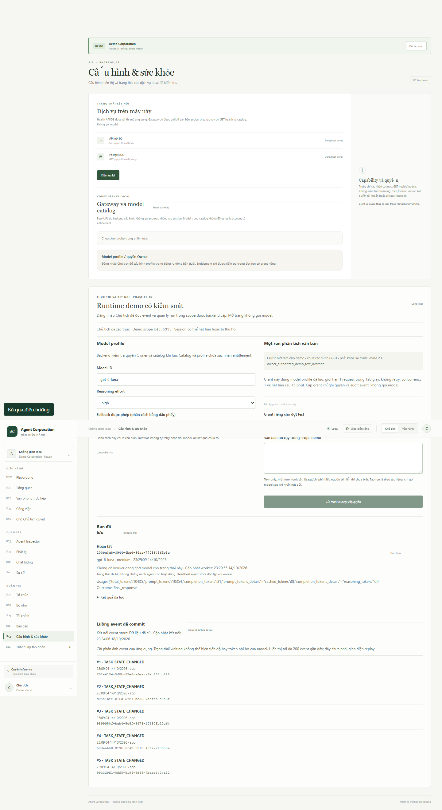
states/stale · 1440×900
Heading: Cấu hình & sức khỏe · overflow: False